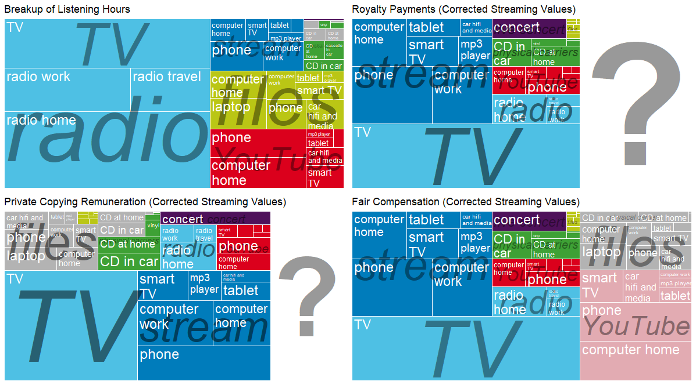

Tip
This technical report fulfills a subtask of the D1.1 Economy of music in Europe: Methods and indicators of the Work Package 1 of the Open Music Europe (OpenMuse): An Open, Scalable, Data-to-Policy Pipeline for European Music Ecosystems project, supported by the Horizon Europe Grant agreement ID: 101095295. All materials related to this research can be found in the open repository at https://github.com/dataobservatory-eu/music-market-comparators. Bookmark this document as a webpage. Permanent storage and DOI: Zenodo.
From the Grant Agreement: A market comparator model for valuing public performance and free uses, such as representative music streams (based on CEEMID ‘full market model’ and a DCF model) is developed.
Subjects: Music industry; Valuation; Copyright
Funded by the European Union. Views and opinions expressed are however those of the author(s) only and do not necessarily reflect those of the European Union or the European Research Executive Agency. Neither the European Union nor the granting authority can be held responsible for them.
Revision history:
0.1.0 First draft (2023-06-16), DOI: 10.5281/zenodo.8046977.
0.1.1 Incremental improvements incorporated (2023-07-06).
Both the publishing and recording sides of the industry exploit intellectual property, i.e. author’s rights (copyrights, or “publishing side”) and neighbouring rights (or “recording side”)1. The value of music in most cases is an indivisible value of the publishing and the recording side: for example, in a public performance in a restaurant or as a soundtrack “synchronised” to a movie, it is legally impossible to use music without clarifying both licenses2. A very significant exception to this rule is the licensing of live performances. It is assumed that the author may not be present in a live performance, where the performers are compensated directly; collective management organisations collect the author’s share in a licensing fee or royalty form from concert organisers.
Exploiting or utilising protected works requires a licensing agreement, which puts a price tag on various uses. The revenue of the rightsholders is the quantity of the use multiplied by this price. In collectively managed uses, such as public performance, the price is usually expressed in a tabular or “tariff” format. In the case of individually negotiated licenses, such as “synchronisation” to moving pictures, i.e., use in film, it is usually a simple, one-time price.
The reason why we need to establish best practices on data collection and consider data availability when applying valuation models is that the music industry is extremely fragmented, and price information is often hard to observe. Even for music organisations that value music professionally, acquiring price data from the market is very difficult. The reason why we need to establish best practices on data collection and consider data availability when applying valuation models is that the music industry is extremely fragmented, and price information is often hard to observe. Even for music organisations that value music professionally, acquiring price data from the market is very difficult. The most important reason for this is that the remuneration of music creators usually happens through many-many microtransactions which are not paid individually. A Digital Streaming Platform (DSP) pays for all streams at the end of the month; a collective management organisation pays for radio uses after every quarter or year. Only a few high-value uses, like licensing a music recording to be used in a feature film, have a clear price: but in this case, there is a central marketplace with price recording.
Although intellectual property rights are legal (in economic terms: artificial) monopolies, in the music industry, the cause of pricing irregularities is not due to seller (monopoly) power but buyer (monopsony) power. A handful of DSPs command most of the recorded music sales globally, which sell the music of millions of creators and hundreds of millions of works and their recordings. Even though the Korean-American artist known as Japanese Breakfast is a monopoly seller of licenses to use her songs and their recordings, she is competing with millions of other artists; her label and publisher represent perhaps a few hundred of them. The artist, the label and the publisher, in this case, are price takers. Even though there are many suppliers on the market, as they are very rarely in the position to set prices, they rarely even collect the information that would empower them to review prices. In our experience, information and data that is required to make normative statements about music prices (“Is the price fair?”) or even to factually observe the price is difficult for a music analyst. Most artists, labels and publishers are not in the position to answer fundamental business questions (“Would it make sense to lower/increase the price?”).
While the theory of price setting for intellectual property like music is not radically different from the economics of setting prices on services or even goods, in practice, an economist working with music prices must pay a lot of attention to observing and collecting or estimating the key economic variables, quantity and price, before practical modelling can take place. The practical valuation must consider the unique and complex structure of the music industry. There are several licensing models present in the current music markets, which makes valuation and price comparison even more challenging. Another complicating factor is the presence of various rights that are often licensed separately, but the legal use of the music requires acquiring all necessary licenses. A film producer may obtain a license from the publishing side of a song but cannot use it without the individually priced master (recording) right.
The structure of this paper is as follows.
The methodology section introduces the relevant regulation and economic valuation models that can be used for music pricing with our subjective commentary about possible methodological choices or limitations. We introduce the concepts of fair value and equitable remuneration, and arriving to the fair value withe “most applicable” intellectual valuation method from the accepted standard models. Then we show that music is licensed according to different contractual models, and there are some exceptions from the general pricing schemes (such as compensating home copying.) At last, we review the definition of the (relevant) market for the analysis.
The data sources critically accesses the data needs of the “most applicable” models and shows some observation and estimation strategies to collect data for modelling purposes: first volumes (quantities) then prices. We introduce various observation and estimation strategies to find quantity of use and value (price) of use information on the relevant markets.
The model section introduces the CEEMID “full market model” which we aim to improve in the Open Music Europe project. [This model does not have yet a formal description, but I think that the intuitive graphical and verbal presentation allow us to start thinking about how to put this into the deliverable—D.A.]
Methodology
The concepts of copyright law, such as equitable remuneration, set a legal basis for the remuneration of creators, particularly in cases where the seller has no freedom of contracting the actual user. Such rules, however, do not contain regulations on how to set the payable sum—this often leads to confusion. Copyright law creates valuable rights, but the value of these rights must be interpreted in the light of further legal principles and economic norms.
In the European Union, copyrights are treated as constitutionally protected rights which are protected on an equal level with fair competition. The states created valuable rights for authors, producers and performers of music with conditions to exploit them fairly. In our understanding the valuation of music and setting its royalty prices should mainly follow the Fair Value standards, which inspired by the more general arm’s length principles.
Fair value and equitable remuneration
Copyrights and neighbouring rights are governed by international law, and in Europe, they are further harmonized by EU law. The valuation principles of intellectual property are set by various standards set by the World Intellectual Property Organization (WIPO) and the International Financial Reporting Standards Board (IFRS). The IFRS standards are incorporated into EU accounting law, and the WIPO standards have a similar international law underpinning as the more specific copyright and neighbouring right. Even though every European Union member state has its own copyright and accounting laws, they are harmonised to the degree that we can create rather portable valuation models.
Music’s valuation and price setting must comply with the broadest fair value principles (set by international financial reporting standards) in light of the intellectual property standards set by WIPO. Copyright and neighbouring rights law have special provisions, often called “equitable remuneration.” From an economic perspective, we treat equitable remuneration as a special case of fair valuation. Even when equitable remuneration is not applicable in the music industry, we believe the broader fair valuation principle should yield a similar result.
Recently, equitable remuneration received a perhaps oversized attention due to the surrounding policy debates in the United Kingdom. Equitable remuneration is originally connected to a compulsory license that must be paid when recorded music is played in a publicly accessible location to the performing artists and music producers. Strictly speaking, equitable remuneration concerns only a relatively minor portion of the music ecosystem’s income. In our understanding, however, equitable remuneration is just a legal basis to a particular form of fair compensation—governed by the fair value and the arm’s length standard and competition law.
Because in the past years the term equitable remuneration was often part of music policy debates, we want to clarify that this technical term is often not covering what people would instinctively think to ‘equitable’ or ‘just’.
Equitable remuneration is a legal concept which has an economic aspect. In international law, it was first enshrined as Convention C100 of the International Labour Organisation (ILO), stipulating that men and women should receive equal pay for equal work (ILO 1951). Within the context of international copyright law, it was introduced as a modification of the Berne Convention by the Rome Convention for the remuneration of the broadcasting of recorded fixation of music works (recordings) since 19713. Equitable remuneration is originally connected to a compulsory license that must be paid when recorded music is played in a publicly accessible location to the performing artists and music producers. In a compulsory licensing regime, the rightsholders are not in a position to negotiate the royalty rates or deny use to any business entity4. because it is not a negotiated market rate. The payable rate is called equitable (and, in some jurisdictions, fair) . The law stipulates in these cases the rate must be set as if they have negotiated in a market transaction of two willing parties without monopoly (supplier power) or monopsony (buyer power) In economic terms, these rates must be set on a fair value basis.
The equitable remuneration standards in international treaties do not set a standard for calculating the monetary value of the equitable remuneration that is paiable to the rightsholders. In an international context, a study of Europe Economics and IVIR has shown that there are notable differences in how equitable remuneration is understood—and it is often used as a synonym for fair remuneration (Europe Economics & IVIR 2015). Despite the national differences, it is a sufficiently harmonised system that allows the functioning of the global music industry without major barriers and therefore allows the comparison of revenues, prices and volumes, too.
Equitable remuneration is not a valuation or pricing concept, but it is an important legal mechanism to ensure that copyright and neighbouring rightsholders are remunerated. In our understanding, equitable remuneration should happen at fair value as defined by economics and international accounting standards.
When intellectual property is sold (against a lump-sum payment), licensed (for periodical payment), or used as a pledge against a loan, the transaction must comply with the Fair Value standard. This standard, similarly to copyright law, follows international law. While it is transposed into national law in somewhat different ways, it cannot be altered fundamentally. The Fair Value standard of the International Financial Reporting Board has been incorporated into national European laws via EU law (and it remained UK law after Brexit, too.) Our understanding is that music prices should mainly follow the Fair Value standards, but they are also inspired by the more general arm’s length principles: whenever a market transaction is not possible, the compulsory conditions should resemble of something that two market powers without power or proximity of interests (at arm’s length) would agree to pay.
In 2008, the global recording industry body, IFPI, published Valuing the use of recorded music, created by PriceWaterhouseCooper (PwC 2008). This excellent methodological guide applies the WIPO and IFRS standards (IFRS 2011; Flignor and Orozco 2006; Puca and Zyla 2019) on valuing copyrights in more practical terms for the music industry. The valuation principles are enshrined in the fair valuation principles of the WIPO and the fair value principles of the International Financial Standards Board—their use is not a recommendation but a statutory obligation in most IFRS countries.
Most applicable method
The recognised fair valuation principles stipulated that the "most applicable method" must be used in valuations, which almost always leaves out in copyright valuations the (historical) "cost approach" and leaves open the use of the "income approach" and the "market approach". The cost- and income approaches are fundamental valuation techniques and could be used to reset valuations or prices fully.
The cost approach is inapplicable because the rightsholders are natural people who do not account for their working time, i.e., the time when they are composing music. There are no appropriate business records of most creative activities related to the composition and performance of music. The cost approach could be used for the rights of the producers, but because their rights are not going to market in separation from the other rights, cost approaches are never used in the music industry.
The income approach compares the royalty flows of a work of its recording by using an appropriate "discount rate." When a user buys in a music store an mp3 file on 1 July 2015, it triggers a single royalty payment after the deductions of the cost of sale on the marketplace. In a streaming platform, the same user's royalty payments appear monthly when she listens to the song and on the radio, usually every year. The discount rate provides a proper comparison between remuneration received in July 2015 and April 2021. The income approach is often impractical when we have irregular or annual payments. With annual payments, the valuation's timeframe would be too long. Calculating an appropriate discounting rate would also be practically impossible for many uses.
The market approach tries to identify a payment rate, regardless of if it is made in a lump sum, monthly or annually established, based on sufficiently similar uses. Many ideas were tried internationally to identify the sufficiently similar use of music streaming; for example, relating ad-supported and automatically selected songs to radio streams and relating cases where the user controls the selection of songs and may even download them to music downloads. We will use the market approach for practical uses, although the market approach, unlike the cost or income approaches, is not a fundamental valuation method. In other words, we can use the market approach only if we accept that at least some of the prices are correct on the market, and only some of them can be questioned.
The application of fair valuation principles is particularly challenging in the case of private copying, where the transactions are not recorded (as they are not market transactions) and in streaming, which is a relatively new technology that is seen in licensing as a mixture of earlier mechanical copy-based and public performance-based licensing, and has so many transactions that most rightsholders (and even their national organisations) like the data processing capacity to administer the rights or challenge incorrect payments.
Comparing licensing models
If we use the market approach for valuations, we must consider the differences in the way music is licensed and royalties are paid for.
The public performance model has various pricing standards for live music, publishing and the recording side. For radio broadcasting, transmission, and background music, it uses annual blanket licensing. When analysing public performance uses and payments, we must be careful with the timeframe of the analysis. Public performance revenues are usually accrued throughout the year and paid once, but there may be different accrual and payment periods present in a market.
The mechanical licensing model is used for physical products, legalised digital downloads, and home copying and has lump sum values, paid upfront and for perpetuity. In the case of home copying levies/compensation, the sum is not expressed per unit but in annual lump sums, which are historically connected to the mechanical pricing model. (See Private Copying in Croatia, where we explain in detail this analogy (See Private Copying in Croatia where we explain in detail this analogy (Antal 2019a)). The mechanical licensing model is well harmonised globally via BIEM, is the international organisation representing mechanical rights societies.
The streaming model is de facto harmonised by the fact that the major players in the world are the same, and they are using similar model contracts. Legally speaking, the solutions differ among the UK, U.S., and EU solutions, but the streaming model is always a hybrid of the mechanical licensing and the public performance models. A streaming provider needs to have a license from both the publishing side (that is present in mechanical licensing) and all interested parties that are present in public performance licensing. In streaming, the default accrual and payment period is the month.
The UUC model (mainly applied by YouTube) is very different.
These licensing models are very well harmonised internationally. Our model could be easily transposed to any EU member state or the United Kingdom and even to the U.S. if we consider the problem of radio transmission licensing in that jurisdiction. It is important to notice that while the same principles can be applied in many jurisdictions, the actual value of the rights will differ in each country because of different market and regulatory conditions.
We translated the revenues from these income streams, excluding the background music sold to business-to-business uses in the hotel, restaurant, and catering sectors, into notional hourly royalty figures.
In the case of live performances, we took the notional concert visits of each country as a 90-minute performance to compare variously priced live performance revenues with a similar currency unit / per hour format. Live music only uses the public performance model, and it plays a relatively minor role in the live music ecosystem. Our model focuses on the recording and publishing side of the music business—they have two mature business models that are highly comparable internationally or in long-term longitudinal analysis. Both the mechanical licensing model and the public performance model are based on the same international regulation (harmonised on the level of international law) and follow the same business (licensing) model. In most cases, the actual licenses are territorial, and the prices and exact licensing terms are specific to the country. But these aspects of our full market comparator model are very easy to replicate for any year and licensing territory (national jurisdiction.)
The regulation of free uses, particularly the home copying exception and its remuneration, is different in each country which has this exception at all—-but private copying levies, when applicable, do follow an adapted form of mechanical licensing. The compensation is annualised, like in public performance, and the rates (prices) are somehow related to the mechanical royalty rates.
Exceptions: private copying and illegal activities
We must emphasise that not all music users follow the equitable remuneration concept and the licensing models presented earlier. In most European countries, private or home copying is exempted from licensing, assuming that a different compensation provides rightsholders with a similar, fair value remuneration for using their music. Music is often present in religious liturgies, amateur practices and other non-market forms; this is why we measure in quantitative music sociology and economics “access and participation” in music, not “consumption.” And, of course, there are numerous cases when music is illegally used. For example, home copying is not illegal, just unlicensed, while peer-to-peer copying of music is clearly illegal. Music rightsholders are entitled to private copying compensation in the jurisdictions which allow people to copy music recordings at home, and they can technically sue for other forms of compensation for the harm caused by illegal (but not private copying) mechanical copying or use of music. The legal distinction between these exceptions and non-market activities is complicated and, for an applied empirical economic analysis, difficult, if not impossible, to incorporate (each use would require a legal analysis based on the circumstances.) For example, when using cultural access and participation surveys to find information about these practices, we refrained from asking for a legal, normative assessment from people in our survey due to various ethical and practical considerations5.
Relevant markets
To apply economic analysis, we must define the market and the actors (sellers, intermediaries and buyers). For practical pricing, we also must establish who has information about the relevant pricing variables. Music is a global business with its own business model and contractual norms that define what information is recorded in market transactions which can be used as input to our economic model of this market.
When economists talk about markets, they do not necessarily talk about a piece of land in Camden Town where people can buy used records from stalls after a bit of haggling. They are using this “marketplace” as a metaphor. The “relevant market” is a metaphoric place that works as if sellers and buyers could potentially meet and agree on transactions. It assumes people are trading securities from their home computers worldwide, and a server clears the transaction, which is physically located in Northern Sweden to keep the processors cool but under the trading license of a firm based in the City of London. The “relevant market” is a partly economic and legal concept within competition law. Any empirical analysis of prices or any normative hypotheses about price changes (“the prices are declining significantly”) or fairness (“the remuneration is fair/unfair/competitive”) can only be made on a well-defined, i.e., relevant market. A wedding band may be available for a hundred dollars in a faraway country, and it may cost thousands of euros in a rich part of Europe; the less remunerated supply on a different continent is irrelevant because wedding organisers have no means to familiarise themselves with these musicians and to bring them at a reasonable cost to a North European wedding.
We used the wedding band as an example because the music business is partly very global (not only in the sense that a wedding band perform the same music works in different continents), but because the same DSPs sell it on all continents; the use of Basque language songs or the performance of wedding entertainer in Northern Romania has a geographically limited market to gain remuneration.
Any market analysis or applied analysis aiming to predict revenues or set prices must start with a market definition. In our case, we are talking about the market of “music”, which is the product or service dimension of the relevant market. A relevant geographic market comprises the area in which the firms concerned are involved in the supply of products or services and in which the conditions of competition are sufficiently homogeneous. Because recorded music creates royalties from copyrights and neighbouring rights defined by national copyright law, and, with some exceptions (for example, the BIEM agreements), are set nationally, the relevant market for analysis is the national market.
In our analysis, we will work with national markets as country borders and jurisdictions of a state define them. Theoretically, this is a straightforward choice. In terms of data availability, it will pose practical problems because streaming royalties, mechanical royalties for digital downloads, and film synchronisation revenues are usually collected from many jurisdictions, and local reporting (observational) units often do not separate well revenues from different market segments.
In the music industry, very few organisations have an opportunity to set prices. Because the author’s and neighbouring rights are legally created monopolies, the price setting is often regulated, and the license provision is compulsory. And because of the high fragmentation of the supply side of the music, most creators and enterprises are either price takers or set prices collectively. Individual price settings, for example, licensing for exploitation on theatrical stages, is a market niche that affects a minority of rightsholders and a small fraction of the total market revenues. Until the emergence of music streaming, the buyer side of the music industry was so much more concentrated than the seller side that, for practical reasons, music was sold in bundles: radios or restaurants bought licenses to play “any protected music”. If an artist released a record and gave the mandate to license it to radio or television stations, it was impossible to revoke this license (it became part of a so-called ‘blanket license’). Therefore we focus on the needs of those European actors who have a price setting power. These are mainly the collective management organisations in Europe.
Data sources
The highly globalised music industry generates two important international reports: the Global Collection Reports of CISAC, which contains total revenues from collectively managed author’s revenues, and IFPI’s Global Music Report of the IFPI, which reports the recording (producer) side of the industry, which covers total revenues in almost all territories for producers and partly performers. These reports were designed to set business targets for larger organisations, and they do not contain price or volume data, only revenue data, which allows minimal economic analysis. The more fragmented live music industry has no comprehensive global or European report. We also do not have a truly comprehensive report on global publisher revenues that are not collectively managed. These reports are not suitable for an economic market analysis because they do not contain prices and quantities, only aggregated revenues. There are many national market studies available, but only a few of them try to quote volume or use data and price data. CISAC and IFPI are global organisations, and their reports are based on an internal survey of their members. Most industry reports are member self-reported studies.
CISAC and IFPI collect (rather different) international data, which is only available to their members. Because CISAC had been earlier accused of price fixing and made an agreement with the European Commission, the organisation is particularly careful about even recording price data. IFPI has a more comprehensive economic analysis; in 2008, it even published a very useful pricing guide (PwC 2008). National music industry reports are also available with variable depth of content and analysis, like the UK Music by Numbers series 6. These reports contain limited information for a thorough economic analysis or valuation, partly because the conflicts of interests within the national music industries, for example, among publishers and producers and producers and performers, do not allow the systematic collection and dissemination of such information.
Our Open Music Europe project grew out of the Central & Eastern European Music Industry Databases (CEEMID) initiative in 2014 (Artisjus et al. 2014), in which rightsholders from three countries attempted to solve these data problem, and bring seemingly data poor Central European countries to a level of data availability that allows better price setting or the creation of better creative industry policies or business strategies.
Music organisations usually do not possess the information that would be desirable for analysing the market from an economic point of view. Surveying rightsholders and users are very difficult, though, because neither rightsholders nor works or recordings have an authoritative description of their population. Only very advanced inverse sampling techniques (which require vast amounts of data) can reveal price and volume movements when the analyst cannot access full transactional logs.
Our Open Music Europe project grew out of the the Central & Eastern European Music Industry Databases (CEEMID) initiative in 2014 (Artisjus et al. 2014), in which rightsholders from three countries attempted to solve these data problem, and bring seemingly data poor Central European countries to a level of data availability that allows better price setting or the creation of better creative industry policies or business strategies. The Hungarian, Slovak, and Croatian reports were based on statistical data created by the administrative records of the local collective management agencies, local market research, international data sources, and independent surveys. They showed that many of the data gaps identified by the Feasibility Study for the establishment of a European music observatory can be filled, but with data collection and processing needs that most national organisations alone do not possess (Antal 2015, 2017b, 2019c, 2019a), and eventually we realised that data problems of more advanced, Western markets and of those future markets like Armenia’ showed very similar data/estimation problems.
Volumes
The most notable problem for any economic analysis of the music sector is the lack of volume information for the most important uses: broadcasting and retransmission, and various forms of licensed and UUC streaming (mainly YouTube.) The public music industry sources do not contain the number of exploitations (uses), the hours of exploitation (uses), or even the number of users.
Detailed volume data usually exists, though it is only sometimes available from the administrative records of a central source, which is not designed for statistical purposes and often hard to access. Live music is collectively the most significant part of the music industry, but it needs to be more cohesive, and except for a few small and developed national markets, there are no real central ticketing services and central points of ticketing information. However, because live performances, in most cases, exploit the music creator’s copyright (except for early and classical music and authentic folk music that is not, or no longer subject to copyright protection), music performances are licensed by collective management organisations. There is always a certain level of latency — some shows go unreported —, but such agencies usually have detailed volume information (number of events, their audience volumes, ticket prices or revenues, and even the actual works used for royalty payment.)
Similarly, the use of recorded music in most cases has full transactional data. Streaming providers pay for every single use, and mechanical licensing is based on the mechanical copies made (in the form of vinyl records, CDs, or downloadable files.) In some countries, broadcasting and re-transmission have a complete transactional log; in other cases, it has large use samples.
Rightsholders often have full or near-full transaction details for market-based cultural activities, such as sales of records or concert tickets. However, private copying is not a market-based activity, and no sales logs are present. The problem with these data sources is that they are business confidential and fragmented and lack a common collection methodology. It is possible to integrate this data, but often it is more useful to collect more aggregated forms of data.
To arrive at a common denominator of users and uses, we calculate notional hours of music enjoyment in the form of attending concerts, listening to radio or streaming services, or the respondent’s record collection.
Prices
The price information is always missing from the public music industry reports, and critically, in the absence of volume data, even price averages cannot be calculated from total revenues. The prices are very stable in some licensing models, for example, in such as mechanical licensing (international agreements set them), or in many countries in the public performance model, when broadcasting and retransmission tariffs often do not change for more than a decade. They are fluctuating monthly on licensed streaming platforms.
Price observation (estimation) and comparison are challenging. Traditionally, public performance licenses are blanket licenses that cover any use for a set period (usually a year), but these blanket revenues are distributed by the collective management organisations by radio transaction logs or samples of such logs. So, the payment is not directly connected to a single use, and much data would be required to calculate the implied price per use. Our approach is to calculate an implied hourly price per user.
In the streaming platforms, the end users pay a lump sum subscription fee, and their use, either using the pro-rata or a user-centric algorithm. To make a comparison possible, we have translated the streaming revenues, like other revenues, to hourly figures, even though we could calculate implied per-use prices.
Mechanical royalties are lump sum payments because the licensing fee is payable for one mechanical copy/download of the song (often priced differently in bundles, i.e. “albums”.) Unlike streaming prices, this price is not for a single use but for any number of uses during the useful life of the copy. Unlike public performance licenses, the royalty payment is not related to a time period—–again, the lump sum payment is made for the entire useful life of a copy. One possible approach to express the cash flows of the lump payment as a perpetual annuity’s annual cash flow. In a simpler model, if we assume that the useful life and the renewal of music collections are stable, we may assume that the annual mechanical licenses are paid for the part of the collection that is replaces the old elements in a record collection that reached their useful life.
Translating various prices to GBP/listening hour or HUF/listening hour requires much estimation work. To systematically use listening hours, we used the standardised CAP surveys (see (ref?)(estimating-volumes).) Most public performance revenues were available in annualised, national aggregates; in this case, we could easily compare the self-reported use hours with annualised revenues for the entire user population.
Estimation strategies
Almost all recorded industry transactions have full transactional detail (use, licensing data, price), and to a lesser extent, live music performances have rich transactional data. In statistics, we call these information sources administrative records, which contain detailed information that was not designed for statistical purposes.
To use such data, we must overcome many data processing steps. We must bring them to the same timeframe, same functional currency, and remove personal or business identifiers.
The Digital Music Observatory has been following the methodological guidelines of the former ESSNet-Culture statistical working group. These methods were synthesised from the best practices found by ESSNet-Culture, a working group set up by Eurostat and 15 member states’ national statistical offices to measure cultural and creative industries. The ESSNet-Culture working group recommends measuring cultural access and participation (including market- and non-market forms) based on the ICET model (Bína, Vladimir et al. 2012, pp 237-239).
- Information: to seek, collect and spread information on culture;
- Communication and community: to interact with others on cultural issues and to participate in cultural networks;
- Enjoyment and expression: to enjoy exhibitions, art performances and other forms of cultural expression, to practice the arts for leisure, and to create online content;
- Transaction: to buy art and to buy or reserve tickets for shows.
The ICET model is based on a long history of quantitative sociology and media research with almost 50 years of research history. It is a well-established methodology. For more details, we conducted cultural access and participation surveys with it see (Haan and Adolfsen 2008; Haan and Broek 2012).
Timeframe of analysis
Various licensed uses of music have three royalty payment cycles. Mechanical royalties are paid once in a lifetime. Public performance royalties are collected on an annual basis, and small earnings (that would be too costly to pay out during the year) are accumulated over two or more years. Streaming earnings are paid out monthly, but similarly to public performance royalties, small amounts are accumulated over two or more periods. Observing royalty statements alone cannot enable meaningful comparisons because the same payouts on a given date—for example, 30 April 2020—refer to different earning periods.
Price comparison is challenging in the music sector because various forms of exploitation of the underlying copyright or neighbouring right (the “revenue streams”) have different licensing and contracting models. The prices of mechanical reproduction, public performance and broadcasting/transmission are based on annual use and annual payments. Because some earned royalties are very small, royalty management organisations do not pay out but accumulate earnings where money transfer and accounting costs would be higher or would take most of the payout.
Functional currency
Music is a global industry; even less-known artists or songs occasionally find international audiences on streaming platforms. This means that practically every Slovak rightsholder has some revenues that are not originally denominated in euros. The volume, price, and exchange rate effects must be separated for any meaningful economic analysis.
Revenues are multiples of use volumes over price expressed in a specific currency. They can be national or domestic market indicators Ideally, the data collection should record volumes (number of streams), prices (value of individual stream), and exchange rates (conversion rate applied for the particular stream) for all important markets of the artist, company or national organisation. Currency translations must be consistent with the timeframe and accruals policies.
Without the ability to set up apart foreign versus national or domestic revenues, and break up the effect of changing volumes, prices and exchange rates, they are not suitable for economic analysis.
Model
The CEEMID full-market model (introduced in Music Use and Rightsholder Damages and Enjoyment of Audiovisual Content and Rightsholder Damages) was partly based on Valuing the use of recorded music, an excellent methodological guide created by PriceWaterhouseCoopers for IFPI (PwC 2008). In our understanding, similar valuations presented here in this short example must meet high statistical standards (Bína, Vladimir et al. 2012) and IFRS Fair Value standards (IFRS 2011; EUR-Lex 2012), which had been adopted into EU law.

This was the framework that CEEMID, a cooperation of several European rightsholders, including Artisjus and SOZA, started to develop when they started to cooperate on meeting the data requirements of these valuation techniques. It was used for royalty pricing and compensation claims in Hungary (Antal 2017a, 2018), Slovakia (Antal 2019b) and Croatia (Antal 2019a) are comparing per-hour royalty revenues in various licensing and compensation models, therefore providing a common metric for mechanical, public performance, streaming and private copying compensation revenues.
This model is based on a competition policy-based argument. Radio stations, television, YouTube and streaming platforms are all competing for consumers’ attention, and they are competing with each other. At any minute, when a user is listening to music or a podcast in a car, she is not listening to the radio; when he is watching YouTube, he is not watching television. And, of course, when a vinyl record is played on a turntable at home, the digital radio is not playing.
Our full market comparator model takes further the market comparator model of PWC published by IFPI, connecting to the entire US and European music value chain models. These value chain models traditionally divide the music industry into three revenue streams: live music, publishing and recording side. We incorporated all three-revenue streams’ licensing income into the model.
xxx
As our experience showed in Hungary, Slovakia, and Croatia, even though in these use cases, there are legal mechanisms that should allow the prices to converge to each other — after all, our model is a price-setting model for royalties originally—the prices can greatly deviate. Some countries have not adjusted their home copying compensation for a long time, or there is some local regulatory interference (like in the U.S.) with radio licensing. But at least on the level of the international legal norms and the model contracts, we can expect some sort of convergence that allows using the prices of any other use as a comparator for any analysed use.
In an EU jurisdiction, before the implementation of the DSM Directive, we can objectively exclude the UUC model from this comparison, as there is no similar licensing model that would allow price convergence.
Our solution in the Hungarian and Slovak models was to report figures with and without the inclusion of UUC, which was dominated by the use of YouTube. As a base case, we excluded UUC uses from the market comparators as there was no sufficient price harmonisation and a sufficiently similar contracting practice or legal basis for the revenues.
References
Antal, Daniel. 2015. ‘A Proart zeneipari jelentése. [The Music Industry Report of Proart]’. ProArt Szövetség a Szerzői Jogokért Egyesület. http://zeneipar.info/letoltes/proart-zeneipari-jelentes-2015.pdf.
———. 2017a. ‘The Competition of Unlicensed, Licensed and Illegal Uses on the Markets of Music and Audiovisual Works [A szabad felhasználások, a jogosított tartalmak és az illegális felhasználások versenye a zenék és audiovizuális alkotások hazai piacán]’. Artisjus - not public.
———. 2017b. ‘The Growth of the Hungarian Popular Music Repertoire: Who Creates It And How Does It Find An Audience’. In Made in Hungary, 1st ed. Studies in Popular Music. New York, NY: USA: Routledge.
———. 2018. ‘The Competition of Unlicensed, Licensed and Illegal Uses on the Markets of Music and Audiovisual Works [A szabad felhasználások, a jogosított tartalmak és az illegális felhasználások versenye a zenék és audiovizuális alkotások hazai piacán]’. Artisjus - not public.
———. 2019a. ‘Private Copying in Croatia’. https://www.zamp.hr/uploads/documents/Studija_privatno_kopiranje_u_Hrvatskoj_DA_CEEMID.pdf.
———. 2019b. ‘Slovak Music Industry Report [Správa o slovenskom hudobnom priemysle]’. https://doi.org/10.17605/OSF.IO/V3BE9.
———. 2019c. ‘Správa o slovenskom hudobnom priemysle’. https://doi.org/10.17605/OSF.IO/V3BE9.
Artisjus, HDS, SOZA, and Candole Partners. 2014. ‘Measuring and Reporting Regional Economic Value Added, National Income and Employment by the Music Industry in a Creative Industries Perspective. Memorandum of Understanding to Create a Regional Music Database to Support Professional National Reporting, Economic Valuation and a Regional Music Study.’
Bína, Vladimir, Chantepie, Philippe, Deboin, Valérie, Kommel, Kutt, Kotynek, Josef, and Robin, Philippe. 2012. ‘ESSnet-CULTURE, European Statistical System Network on Culture. Final Report.’ Edited by Frank, Guy. https://ec.europa.eu/assets/eac/culture/library/reports/ess-net-report_en.pdf.
EUR-Lex. 2012. ‘Commission Regulation (EC) No 1126/2008 of 3 November 2008 adopting certain international accounting standards in accordance with Regulation (EC) No 1606/2002 of the European Parliament and of the Council (Text with EEA relevance)’. Official Journal of the European Union. https://eur-lex.europa.eu/legal-content/EN/TXT/HTML/?uri=CELEX:32012R1255&from=EN.
Europe Economics & IVIR. 2015. ‘Remuneration of Authors and Performers for the Use of Their Works and the Fixations of Their Performances’. European Commission, Directorate-General of Communications Networks, Content & Technology. https://www.ivir.nl/publicaties/download/1593.pdf.
Flignor, Paul, and David Orozco. 2006. ‘Intangible Asset & Intellectual Property Valuation: A Multidisciplinary Perspective’. https://www.wipo.int/export/sites/www/sme/en/documents/pdf/ip_valuation.pdf.
Haan, Jos de, and Anna Adolfsen. 2008. De Virtuele Cultuurbezoeker - Publieke Belangstelling Voor Cultuurwebsites. SCP-Publicatie 2008/9. Den Haag, the Netherlands: Sociaal en Cultureel Planbureau. https://archief18.archiefweb.eu/archives/archiefweb/20200311100055/https://www.scp.nl/dsresource?objectid=5c6903f1-e6ae-4e62-9a9b-6d5e1529756a&type=org.
Haan, Jos de, and Andries van den Broek. 2012. ‘Nowadays Cultural Participation - an Update of What to Look for and Where to Look for It’. In ESSnet-CULTURE, European Statistical System Network on Culture. Final Report., 397–417. Luxembourg. https://ec.europa.eu/assets/eac/culture/library/reports/ess-net-report_en.pdf.
IFRS. 2011. ‘IFRS 13 Fair Value Measurement’. International Financial Reporting Standards Foundation. https://www.ifrs.org/issued-standards/list-of-standards/ifrs-13-fair-value-measurement/.
ILO. 1951. ‘C100 - Equal Remuneration Convention, 1951 (No. 100)’. International Labour Organization. https://www.ilo.org/dyn/normlex/en/f?p=NORMLEXPUB:12100:0::NO::P12100_ILO_CODE:C100/.
Puca, Antonella, and Mark L. Zyla. 2019. ‘The Intangible Valuation Renaissance: Five Methods. Enterprising Investor’. 11 January 2019. https://blogs.cfainstitute.org/investor/2019/01/11/a-renaissance-in-intangible-valuation-five-methods/.
PwC. 2008. ‘Valuing the Use of Recorded Music’. IFPI PricewaterhouseCoopers. http://www.ifpi.org/content/library/valuing_the_use_of_recorded_music.pdf.
WIPO. 1996a. ‘WIPO Copyright Treaty’. World Intellectual Property Organization. https://www.wipo.int/treaties/en/ip/wct/.
———. 1996b. ‘WIPO Performances and Phonograms Treaty’. World Intellectual Property Organization. https://www.wipo.int/treaties/en/ip/wppt/.
Footnotes
Copyright is a common law concept, and it is more associated with publishers; the author’s right is more a continental European concept derived from the author’s personal rights. For valuation purposes, we do not differentiate between these rights, because the value stems from the how music creates value for the business licensee or the end-user regardless of the precise legal definition of this use. When we value the author’s rights or copyright, we value the right to exploit music works or the “publishing side”; when we value neighbouring rights, we value the right to exploit the recorded fixations of its performances or the “recording side.”↩︎
On clarification we mean establishing the fact that the author’s right (publishing side) or the neighbouring right (recording side) still falls under the intellectual property protection term when a license with appropriate remuneration is required. The two rights only incidentally have the same protection term. Popular works, for example, Béla Bartók’s works, are often re-recorded. Though his works are no longer under author’s rights protection since 2016, most of the recordings of his works are still in the protection period. In this case, only one license is required. The use of a recent musical work and its recording by Taylor Swift require both licenses for a very long time after 2023.↩︎
This right is further elaborated by the WIPO Performances and Phonograms Treaty (WPPT). These copyright conventions are administered by the WIPO (WIPO 1996a, 1996b).↩︎
Compulsory licensing never applies to private end-users.↩︎
The ethics of statistical surveying requires respondents to be competent in answering the questions; it is a random sample of citizens it cannot be assumed that people are familiar with the nuances of copyright law exceptions. Furthermore, some of the illegal uses of music may be incriminating; it is ethically dubious and certainly counterproductive to ask people, even in anonymous surveys, about issues that may put them into legal jeopardy.↩︎
Music By Numbers is the flagship annual economic study of the country’s trade organisation UK Music. See their website for more information.↩︎